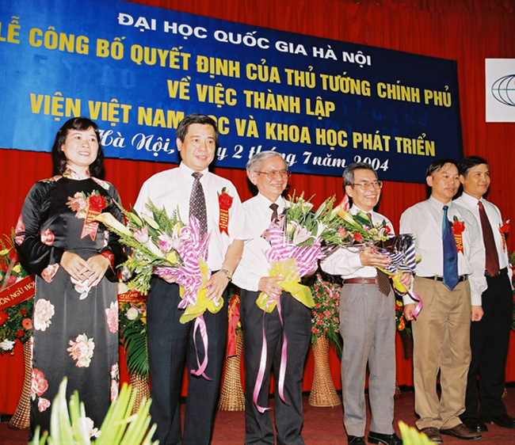
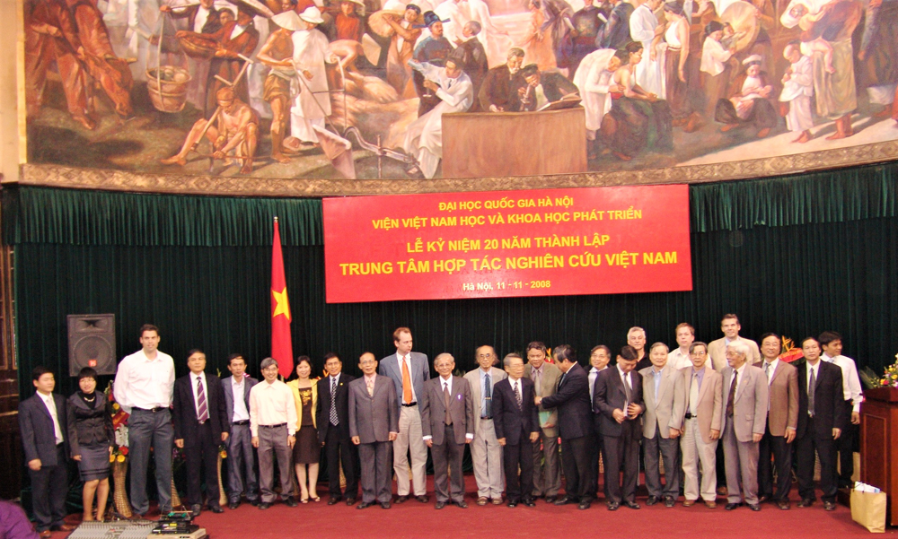

Việt Nam học – Chặng đường 30 năm
Viện Việt Nam học và Khoa học phát triển, ĐHQGHN có đơn vị tiền thân là lập Trung tâm Phối hợp nghiên cứu Việt Nam, Trường Đại học Tổng hợp Hà Nội, được thành lập ngày 11 tháng 11 năm 1989.

Trong quá trình xây dựng và phát triển, năm 2004, nhằm đáp ứng nhu cầu phát triển của Việt Nam học hiện đại trong tình hình mới của đất nước, Thủ tướng Chính phủ đã ký quyết định thành lập Viện Việt Nam học và Khoa học phát triển thuộc ĐHQGHN, tiếp tục triển khai nghiên cứu khoa học và đào tạo sau đại học về Việt Nam học theo hướng liên ngành trên nền tảng của Khu vực học.
Từ đó đến nay, sự phát triển của Viện đã đưa sự nghiệp hợp tác, nghiên cứu Việt Nam từ một sáng kiến của một trường đại học, một tập thể nhà khoa học lên tầm vóc quốc gia.
Viện đã bắc nhịp cầu hữu nghị đậm chất văn hóa và học thuật đã mở ra những bến bờ mới ở khắp các châu lục, trực tiếp mở đường cho sự ra đời của ngành Việt Nam học dựa trên nền tảng Khu vực học ở cả Việt Nam và ở nước ngoài, được đánh dấu bằng chuỗi các Hội thảo Quốc tế về Việt Nam học.
Đặc biệt, sau thành công của Hội thảo Quốc tế về Việt Nam học lần thứ 2 và để ghi dấu sự trưởng thành của ngành Việt Nam học nước nhà, ngày 16 tháng 11 năm 2004, Giám đốc Đại học Quốc gia Hà Nội đã ban hành chương trình đào tạo Thạc sĩ chuyên ngành Việt Nam học và giao cho Viện Việt Nam học và Khoa học phát triển tổ chức thực hiện và tiếp đến năm 2012 là chương trình đào tạo Tiến sĩ Việt Nam học.
Mục tiêu của chương trình đào tạo sau đại học về Việt Nam học là đào tạo những Thạc sĩ, Tiến sĩ nắm vững và vận dụng tốt phương pháp nghiên cứu khu vực, có kiến thức bao quát, toàn diện về các vấn đề liên quan đến Việt Nam, trên cơ sở đó có khả năng lý giải mối quan hệ tương tác giữa các hiện tượng xã hội, đồng thời có khả năng đi sâu nghiên cứu và giải quyết các vấn đề về không gian văn hoá - xã hội từng vùng của Việt Nam với tư cách là một đối tượng nghiên cứu tổng hợp. Có thể nói, chuyên ngành Việt Nam học có vị thế và ý nghĩa đặc biệt quan trọng, đào tạo ra các chuyên gia có phông kiến thức rộng về đất nước, con người Việt Nam, biết làm việc trong môi trường liên ngành và sử dụng thành thạo các kỹ năng nghiên cứu đa ngành, liên ngành, tư vấn chính sách cụ thể phục vụ chiến lược phát triển kinh tế, xã hội, văn hoá Việt Nam, nghiên cứu, tư vấn chính sách bảo vệ chủ quyền biển đảo,…
- Là đơn vị nghiên cứu cơ bản phục vụ chính sách và tư vấn ở cấp Trung ương và địa phương
Trong những năm gần đây, Viện đã tư vấn cho Đảng, Nhà nước, Chính phủ, các Bộ ban ngành và địa phương các vấn đề mang tầm quốc gia như: Tư vấn cho Ủy ban Dân tộc trong việc triển khai kế hoạch nghiên cứu và ứng dụng các kết quả nghiên cứu nhằm phát triển và phát triển bền vững cộng đồng các dân tộc Việt Nam, Tư vấn cho Ban Chỉ đạo Tây Bắc trong việc kế hoạch nghiên cứu và ứng dụng các kết quả nghiên cứu KHXH&NV nhằm phát triển và phát triển bền vững các cộng đồng cư dân khu vực Tây Bắc, Tư vấn cho Hội liên hiệp thanh niên Việt Nam trong việc triển khai các chính sách về thanh thiếu niên Việt Nam trong thời điểm hiện nay, Tư vấn chính sách một số vấn đề cơ bản và cấp bách đặt ra đối với sự nghiệp phát triển văn hóa, khoa học và công nghệ, giáo dục và đào tạo ở Việt Nam trong nửa đầu thế kỷ 21 do Văn phòng Chính phủ đặt hàng GS.TS. Phạm Hồng Tung; Tư vấn về cơ sở lịch sử và thực tiễn về vấn đề chủ quyền quốc gia nói chung và Hoàng Sa, Trường Sa của GS.TS Nguyễn Quang Ngọc theo yêu cầu của Chính phủ và Bộ Thông tin, Truyền thông; Tư vấn về các vấn đề liên quan đến biến đổi môi trường, sinh thái; Tư vấn phát triển bền vững du lịch biển đảo của GS.TS Trương Quang Hải; Tư vấn về công tác nữ trí thức cho Hội Liên hiệp Phụ nữ Việt Nam của PGS.TS Nguyễn Thị Việt Thanh,…
Từ năm 2007, theo hợp đồng với Ủy ban Biên giới Quốc gia, Viện chủ trì đề tài “Tổng hợp, đánh giá các nguồn tư liệu Việt Nam và phương Tây về chủ quyền của Việt Nam trên hai quần đảo Trường Sa, Hoàng Sa” thuộc Đề án 79 của Bộ Ngoại giao. Đề tài không chỉ cung cấp nguồn tư liệu phong phú, xác thực và vô cùng quý giá để khẳng định chủ quyền thật sự, lâu dài và liên tục của Việt Nam, mà còn đưa ra nhiều luận cứ khoa học cho việc xây dựng và hoàn chỉnh bộ hồ sơ pháp lý, phục vụ cho cuộc đấu tranh bảo vệ chủ quyền của Việt Nam tại các vùng biển đảo của Tổ quốc. Hiện nay, theo chỉ đạo của ĐHQGHN, Viện được giao làm đầu mối triển khai nhiệm vụ “Xây dựng bộ tư liệu chuẩn quốc gia về chủ quyền Việt Nam trên hai quần đảo Trường Sa và Hoàng Sa”; sưu tầm, tập hợp, hệ thống và nghiên cứu các nguồn tư liệu về chủ quyền của Việt Nam trên hai quần đảo Trường Sa, Hoàng Sa; nhóm nghiên cứu mở rộng triển khai các đề tài về lịch sử cư dân, văn hóa, đặc trưng kinh tế, xã hội… các vùng biển, đảo phục vụ chiến lược ổn định lâu dài và phát triển bền vững biển đảo Việt Nam. - Trung tâm nghiên cứu uy tín về Thăng Long - Hà Nội